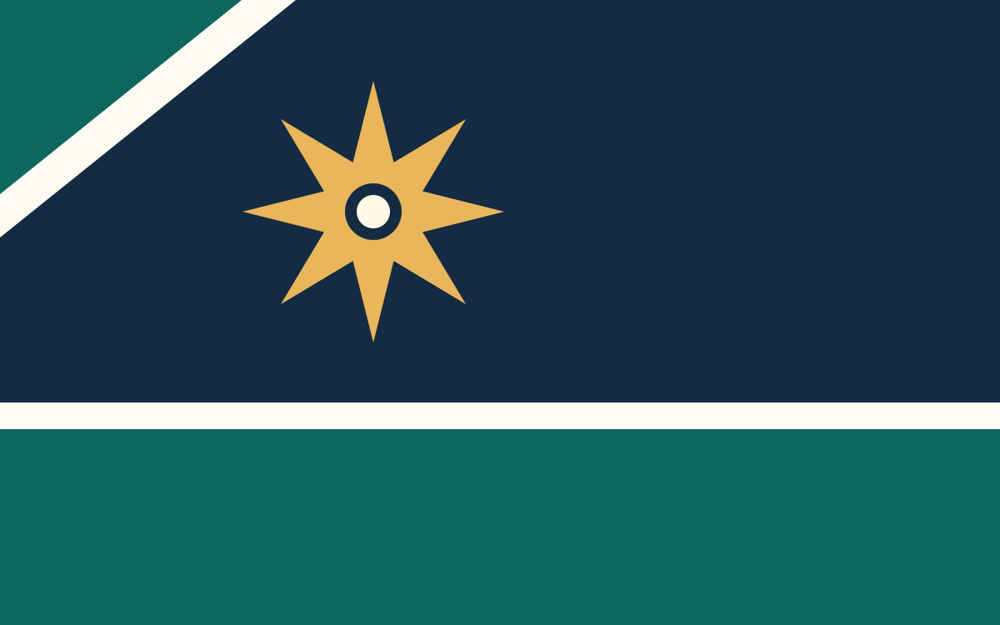
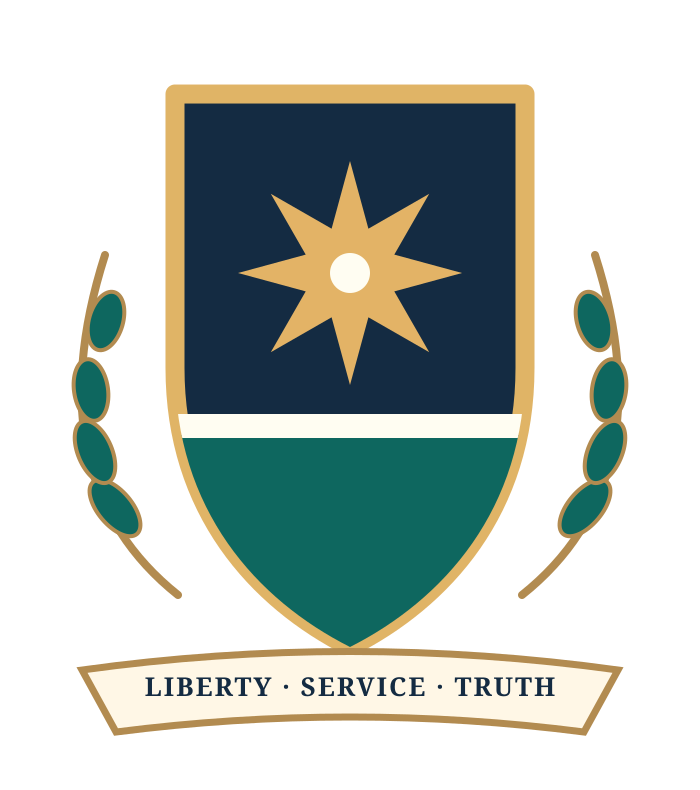

A republic begins with people.
Welcome to the public Gazette of the Republic of Parristan. Here we document the real work of forming a democratic micronation: public notices, proposals, constitutional debate and decisions supported by evidence.

Government Gazette
Version-controlled notices from the founding initiative. Dates and statuses are stated as they stand.
5 notices shown
Founding initiative and constitutional consultation
Notice of the civic founding process, circulation of draft constitutional documents and an open call for substantive feedback.
Proposed first constituent assembly
A process for bringing consenting participants together to debate and, if they agree, adopt a constitution through a verifiable ballot.
National symbol designs released for consultation
Original flag and coat of arms proposals, alongside a suggested anthem lyric and invitation for public discussion.
First founding assembly held
Initial report of all five founding members attending the 3:30 pm AEDT meeting. Later ratification counts appear in No. 2026-005.
Constitution ratified; Glenn appointed CDO
Supplied minutes record unanimous constitutional ratification, open-source strategy adoption and activation of the Office of Sovereign Systems.
Symbols for consideration
A nation should have a distinctive public identity. These original designs are offered for consultation — they are not adopted state emblems.
The Founding Star
Deep navy for public duty, teal for community, ivory for equality and a golden star for shared hope.
Discuss this proposal ↗
Liberty · Service · Truth
A civic emblem representing responsibility, peaceful service and truthfulness in public life.
Read design notes ↗Your voice in the founding process
The republic's future arrangements should be shaped by people who actually choose to participate. Comment on the constitution, submit civic ideas or suggest a national symbol.
How to participateWhat happens next?
The five-member founding assembly met on 19 November 2026. The supplied minutes record a 5–0 constitutional ratification. The next milestone is the first presidential election, while citizenship intake is not yet operating.
At present, no citizenship intake is operating and no public comments constitute votes.
Join the constitutional consultation ↗